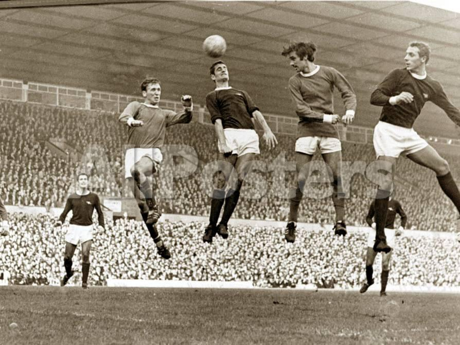

Even the most optimistic West Ham fan will struggle to see how their side can win or even get something out the game.
Moyes, who has also been in charge of Everton, Manchester United and Sunderland, has been to Liverpool’s home 15 times as a manager and has not won any of them – losing eight and drawing seven.
The Scot has lost on his last three trips to Anfield – the most recent during his first spell at West Ham which saw them comprehensively beaten 4-1 at Anfield in February 2018.

Great caption!
Something else
Records are there to be broken but judging by West Ham’s starting XI, it looks like they haven’t set their sights on getting the three points.
West Ham are only a point away from safety but have a very tough run of games after they face Southampton at home on Saturday.
After that is Arsenal away, then Wolves at home, followed by Tottenham away and then Chelsea at home.
But get an unlikely result at Anfield and Moyes is a genius, such is football.
So interesting!